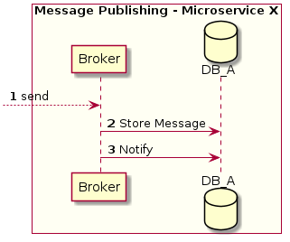
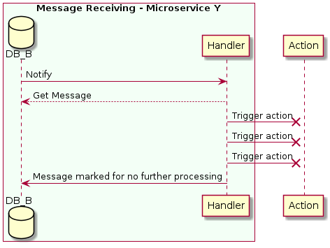

Transactionality¶
To ensure transactionality in the exchange of information between the different services or itself, the Broker is
used to store the information in the database and Handler to retrieve it.
For more details on full workflow of how messages are processed see Messaging introduction.
In this section we will detail the components shown in green in the following diagram:
![@startuml
box "Message Publishing - Microservice X" #FFFFF3
participant Broker #99FF99
database DB_A
participant Producer
end box
database Kafka
box "Message Receiving - Microservice Y" #F3FFF6
participant Consumer
database DB_B
participant Handler #99FF99
end box
--> Broker: send
Broker -> DB_A: Store Message
Broker -> DB_A: Notify
DB_A -> Producer: ...
Producer --> DB_A: ...
Producer --> Kafka: ...
Kafka <--> Consumer: ...
Consumer -> DB_B: ...
DB_B -> Handler: Notify
Handler --> DB_B: Get Message
Handler --> :Trigger action
@enduml](../_images/plantuml-802d835e05d12e04db7cab7923d709cc416c0197.png)
For the following explanations we will assume that the Broker aggregates messages in the local DB of microservice X and Handler is the one that obtains them from the DB of microservice Y. This is to base the example on the communication of 2 microservices instead of one.
Broker¶
The broker is in charge of adding messages to the microservice’s local database and triggering a notification
to let know Producer that there are new messages.

Receive the message and add it to the database
The received message is stored in the
PostgreSQLdatabase of the corresponding microservice. The table where the message is stored has the following structure:CREATE TABLE IF NOT EXISTS producer_queue ( id BIGSERIAL NOT NULL PRIMARY KEY, topic VARCHAR(255) NOT NULL, data BYTEA NOT NULL, action VARCHAR(255) NOT NULL, retry INTEGER NOT NULL DEFAULT 0, created_at TIMESTAMPTZ NOT NULL DEFAULT NOW(), updated_at TIMESTAMPTZ NOT NULL DEFAULT NOW())
Trigger notify action to the database
The Broker triggers a notification to let the Producer know that new messages are available.
NOTIFY producer_queue
Handler¶
It is responsible of getting the message from database and triggering the final action (calling the function that is subscribed to the message for example).
Listens to new messages
The
Handleris actively listening for new messages using the following SQL:LISTEN consumer_queue
The
Handleris notified of new messagesReads from the database table (mentioned in step 1) obtaining the new messages.
Final action is triggered
The message have several attempts to be consumed in the database (parameterizable). As an example, we set the number of retries to 3, if on the third attempt the message is not triggered to action correctly, it is marked to not be processed any more times.

If the message has been published, it is deleted
The
Handlertakes care of deleting the message from the local database once it has been successfully consumed.